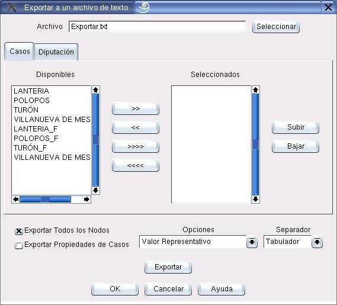

Exportar Archivos de texto
Con el cuadro de diálogo que muestra la figura 10.1 se seleccionan las características del archivo de exportación.
Los principales componentes de este cuadro de diálogo se explican a continuación:
- Archivo:
- Permite definir el nombre y la ubicación del archivo al que se exportará la información.
- Opciones:
- El usuario puede seleccionar los casos y las variables que desea exportar. Los botones con flechas permiten adicionar o retirar items seleccionados. Los botones de subir y bajar permiten controlar el orden de los items seleccionados.
- Exportar todos los nodos:
- Exporta todas las variables de todos los casos, sin tener en cuenta las opciones seleccionadas a que hace referencia el item anterior.
- Exportar propiedades de los casos:
- Exporta información adicional de cada caso.
- Opciones:
- Selección del formato en que se exportará la información. Las alternativas son:
- Valor Representativo
- Ambigüedad
- Valor Representativo y Ambigüedad separados por el caracter /
- Interpretación corta del número difuso
- Interpretación larga del número difuso
- Separador:
- Selección del caracter de separación de columnas.
Figura 10.1:
Diálogo para exportación de datos
|

|
Oscar Duarte
2005-10-17